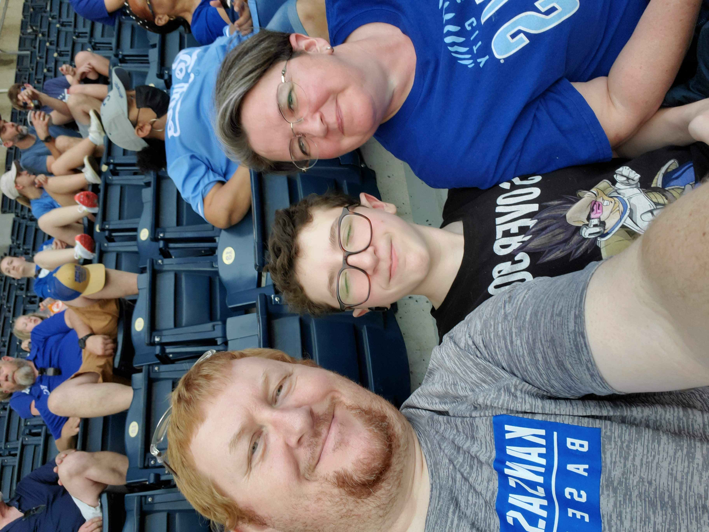
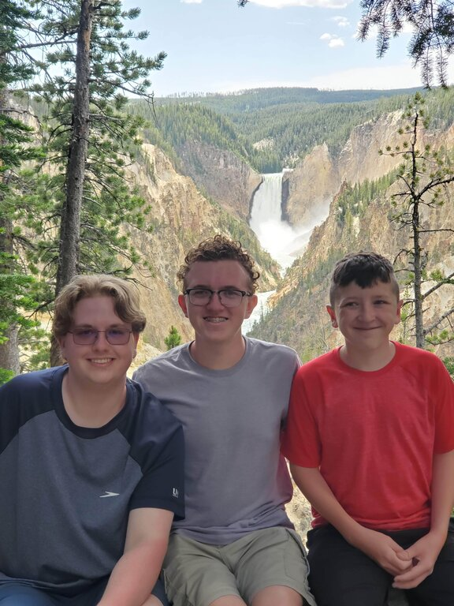
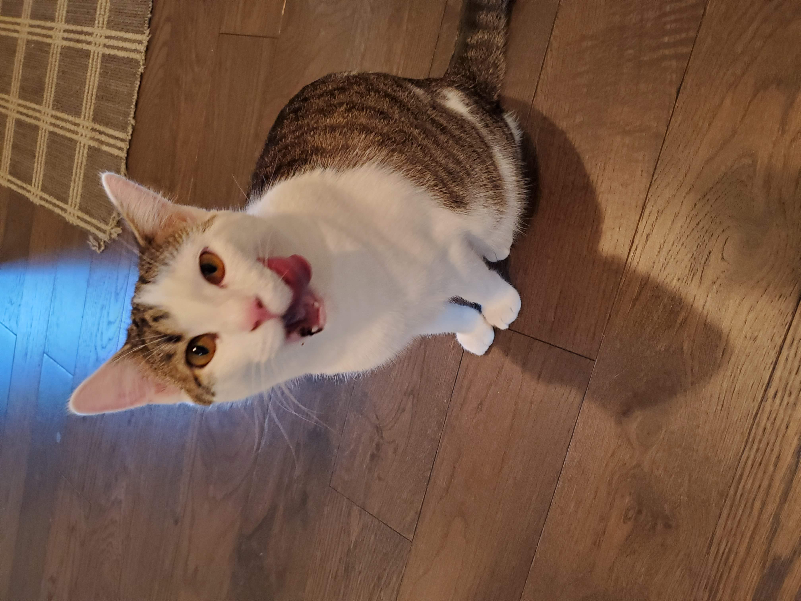
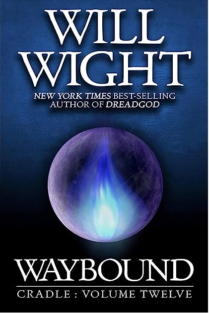
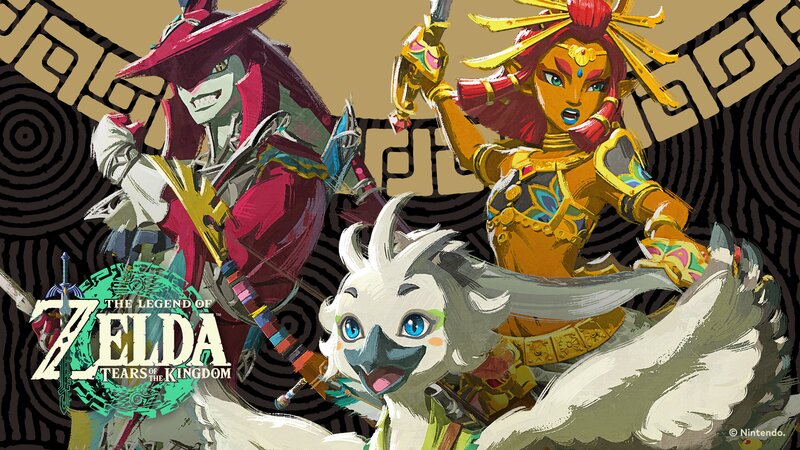

Family
My passion is computers and technology; however, I have a love for many forms of art and media. I love playing games, both board and video. I love watching movies with my family. I love listening to music and have attended concerts for country singers, rock bands, electronic, and classical symphonies. My wife and i really enjoy watching shows together, going on walks, and spending time together going to concerts, movies, and other fun activites. We also love to attend church together and participate in spiritually uplifting activites. I have a passion for being a moral and ethical person. I want to make sure i am doing right and doing good.
I have three sons who I am very proud of. Our oldest son is graduated from High School and working while he figures out his next step. Our middle son is going to be a Senior in High School and has been participating in choir and esports. Our youngest son is going to be a Sophomore and is going to participate in AV Club or Drama Club as well as doing eSports.
The final member of our family is our pet cat, Maple! We moved our family half way across the country right before the pandemic started in 2020.
Working remotely has changed my life in many ways. In the year 2023 I decided that I wanted to be prepared in case I need to change careers or positions so I have started up going to school to get my bachelors degree in software development.
This page highlights some of my hobbies and interests and my love of my family.